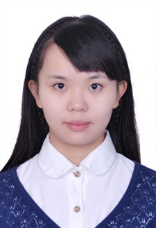

Mail：wusy1029@gmail.com
毕业去向：
清华长庚医院器官移植与仿生医学中心
教育经历：
2010.09 - 2014.07 西北农林科技大学 生物技术 学士
2014.09 - 2016.07 西北农林科技大学 动物生物技术 硕士
2016.10 - 2021.09 马斯特里赫特大学 神经科学 博士
工作经历
2022.01 – 2025 北京大学，天然药物及仿生药物国家重点实验室，博士后
研究领域
肿瘤免疫治疗
研究成果
1. Wu S, Romero‐Ramírez L, Mey J. Retinoic acid increases phagocytosis of myelin by macrophages. J. Cell. Physiol, 2021, 236(5): 3929-3945.
2. Wu S, Romero‐Ramírez L, Mey J. Taurolithocholic acid but not tauroursodeoxycholic acid rescues phagocytosis activity of bone marrow‐derived macrophages under inflammatory stress. J. Cell. Physiol, 2021, doi: 10.1002/jcp.30619
3. Romero-Ramírez, L. #, Wu, S. #, de Munter, J., Wolters, E. C., Kramer, B. W., & Mey, J. Treatment of rats with spinal cord injury using human bone marrow-derived stromal cells prepared by negative selection. J. Biomed. Sci., 2020, 27(1), 1-18.
精彩花絮